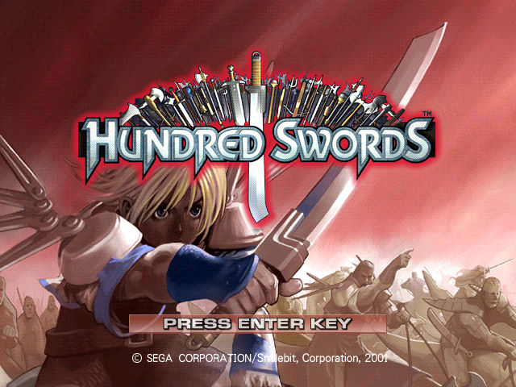
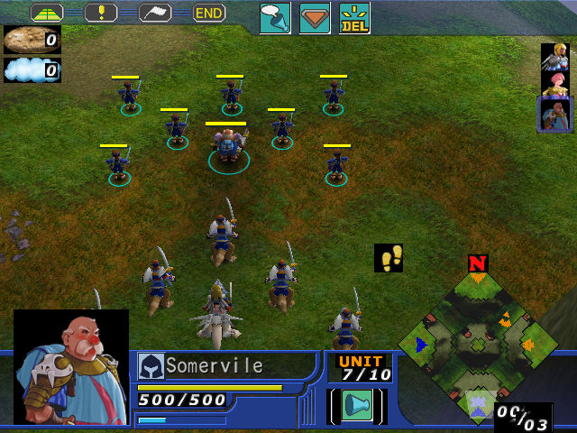

名稱：百劍／百劍奇兵 (Hundred Swords，英文版) 簡介：Smilebit 2001年出品的即時戰術遊戲，由SEGA代理發行 [待補]。

保護：光碟，破解碼（需完全安裝）： H_SWORDS.exe 01 00 00 0F 84 8D 00 (共2個) -- -- -- C7 03 2E 5C F8 05 75 62 83 (共2個) -- -- 90 90 -- 83 C4 04 85 C0 75 34 -- -- -- -- -- EB -- 51 FF D3 83 F8 05 0F 85 85 00 00 00 C7 01 2E 5C 00 00 90 90 90 90 90 90 74 4D 8D 94 90 90 -- -- 75 36 8D 44 90 90 -- -- 85 C0 75 2A 46 83 B0 01 EB -- -- -- 83 C4 04 85 C0 75 2A 6A 00 -- -- -- -- -- EB -- -- -- 備註：VirtualBox無法正常執行，虛擬機請使用VMware。